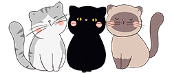

ResGatar
Home
Sobre nós
Doe
Contato
Bem vindo ao
ResGatar
O maior site de
miaudoção
de Poa e região!
É novo por aqui? Você pode saber mais sobre quem somos nós clicando aqui!
Para nos a judar a manter esse projeto, e continuar a cuidar dos nossos bichinhos você pode clicar aqui.
Em caso de dúvidas, fique a vontade para nos contatar a qualquer momento, clicando aqui.